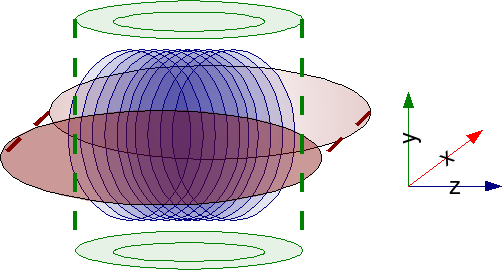

One of the first things many students notice about MRI is the sound.
During an examination, the scanner can produce loud knocking, buzzing, tapping, or rapid clicking sounds. The pattern can also change during the scan.
But what is actually making all that noise?
The main reason is the gradient system inside the MRI scanner.
To understand the noise, we first need to understand what the gradients do.
MRI Needs More Than Just a Strong Magnet
An MRI scanner has a strong main magnetic field, usually called B0.
This field is important for MRI because it affects the behavior of hydrogen nuclei in the body.
But the main magnetic field alone cannot tell the scanner exactly where a signal came from.
This is where gradient fields are used.
MRI has three gradient directions:
- X gradient
- Y gradient
- Z gradient
The gradients make small, controlled changes to the magnetic field depending on position. These changes allow the MRI system to encode spatial information and determine where the detected signals originated.
So gradients are essential for creating an MRI image.
And they are also the main reason the scanner gets so loud.

What Happens Inside the Gradient Coils?
The gradient coils carry electrical currents that are switched on and off, and changed in strength and direction, during the scan.
These changes can happen very rapidly, depending on the MRI sequence.
The gradient coils are located inside the scanner's strong main magnetic field.
When an electrical current-carrying conductor is placed in a magnetic field, it experiences a force called the Lorentz force.
In MRI, these forces act on the gradient-coil conductors.
When the gradient currents change rapidly, the forces also change rapidly.
This causes parts of the gradient system to vibrate.
Those vibrations create sound waves that travel through the scanner and the surrounding air.
So the basic idea is:
That is the main reason MRI scanners are noisy.
Why Does It Sound Like Knocking?
The gradient system does not produce one constant vibration.
Instead, the currents follow specific patterns determined by the MRI sequence.
As the gradients are rapidly switched, the resulting forces can make the gradient structure vibrate at different frequencies.
Some of these vibrations are strong enough to produce the familiar:
or
that patients hear during an examination.
The exact sound depends on the scanner's hardware and the gradient waveforms being used. Different sequences therefore produce different acoustic patterns.
Why Are Some MRI Sequences Louder?
MRI does not use the same gradient activity for every image.
For example, a sequence that requires very rapid gradient switching can produce considerably more acoustic noise than a sequence with less demanding gradient activity.
One well-known example is Echo Planar Imaging (EPI), which uses rapidly changing gradients and can be particularly loud.
This is why the scanner may suddenly become much louder when the technologist starts a particular sequence.
The change in sound usually reflects a change in how the MRI system is acquiring the data.
Is the Main Magnet Making the Noise?
Not mainly.
This is an important distinction.
The large magnet produces the strong, static magnetic field B0 that is present during the examination. The characteristic loud knocking and buzzing is mainly associated with the rapidly changing gradient fields and the mechanical vibrations they produce.
There can be other sources of sound in an MRI environment, including vibrations caused by eddy currents and equipment such as cooling or ventilation systems. However, gradient-induced vibration is generally the dominant source of the loud imaging noise.
What About the RF Pulse?
MRI also uses radiofrequency (RF) pulses.
The RF pulse transfers energy to hydrogen nuclei and is an important part of producing the MR signal.
However, the RF pulse is not the main reason for the loud knocking sounds.
A useful way to remember the different roles is:
Main magnetic field → establishes the main magnetic environment
RF pulse → excites hydrogen nuclei
Gradient fields → provide spatial information
Rapid gradient switching → produces most of the loud acoustic noise
This connects the noise directly to the MRI image-formation process.
Why Does MRI Need the Gradients to Change So Quickly?
MRI needs spatial information to turn the signals from the body into an image.
The gradients help encode that information.
During image acquisition, the scanner may need to change the gradients very quickly and precisely. Faster imaging techniques can require particularly rapid gradient switching.
The trade-off is that stronger and faster gradient activity can also contribute to greater acoustic noise.
So the sound is not simply an unwanted malfunction of the scanner.
It is partly a consequence of the way the MRI system performs spatial encoding and collects image data.
Why Do Patients Wear Hearing Protection?
MRI acoustic noise can be quite loud, so hearing protection is normally provided during examinations.
Depending on the scanner and examination, this may include earplugs, headphones, or other hearing protection.
This is especially important because some sequences can produce high sound levels, and the patient may be exposed to repeated noise throughout the examination.
The MRI technologist can also communicate with the patient during the examination, and patients should follow the instructions provided by the MRI team.
Can MRI Scanners Be Made Quieter?
Yes.
Researchers and engineers have developed different approaches to reduce MRI acoustic noise.
Some methods focus on the gradient coils themselves, such as reducing the mechanical forces or vibrations produced by the coils.
Other approaches involve changing gradient waveforms, modifying the scanner structure, or using acoustic insulation and noise-control techniques.
There is also research into quiet MRI sequences that reduce rapid gradient activity while still producing useful images.
However, reducing noise has to be balanced against the requirements of image acquisition.
So, What Are You Actually Hearing?
When you hear a loud knocking sound during an MRI scan, you are essentially hearing the mechanical response of the scanner's gradient system.
The process can be simplified to:
Electrical current changes in gradient coils
↓
Lorentz forces act on the coils
↓
Gradient-coil structures vibrate
↓
Vibrations create sound waves
↓
The patient hears the MRI noise
The sound is therefore closely connected to the electromagnetic processes that help the scanner determine where the MRI signals came from.
Why Does the Sound Change During the Scan?
An MRI examination usually contains several different sequences.
Each sequence can use the gradients differently.
That means the timing, strength, and pattern of the gradient currents can change from one sequence to another.
As a result, the scanner may produce a different sound pattern at different points in the examination.
So if the scanner changes from a low hum to rapid knocking, that does not automatically mean that something has gone wrong.
It may simply mean that the MRI system has started a different type of data acquisition.
The Whole Idea in One Simple Flow
Quick Recap
- MRI uses gradient fields to provide spatial information during image formation.
- Gradient coils carry rapidly changing electrical currents.
- These currents interact with the main magnetic field and produce Lorentz forces.
- The forces can make the gradient-coil structures vibrate.
- Those vibrations produce much of the acoustic noise heard during an MRI scan.
- Different MRI sequences use different gradient patterns, so the sound can change.
- RF pulses are important for MRI signal generation but are not the main source of the loud knocking sounds.
- Hearing protection is used because some MRI sequences can produce high levels of acoustic noise.
The Key Idea
The loud knocking and buzzing of an MRI scanner mainly comes from vibrations produced when rapidly changing gradient currents interact with the scanner's strong magnetic field.
What sounds like a series of random knocks is actually part of the physics behind how the MRI scanner collects spatial information and creates an image.
Sources & Further Reading
-
Motovilova, A., & Winkler, S. A.
— Overview of Methods for Noise and Heat Reduction in MRI Gradient Coils
Read on PMC -
Acoustic Noise Concerns in Functional Magnetic Resonance Imaging
Read on PMC -
American College of Radiology (ACR)
— ACR Manual on MR Safety
Read the ACR Manual